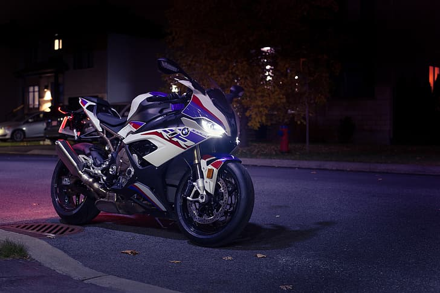

Welcome to my personal webpage! I'm excited to have you here. This space is where I share a little about who I am,
the things I love, and how you can connect with me. Whether you're here out of curiosity, friendship, or shared interests,
I hope you enjoy exploring and getting to know me better. Let's begin the journey!!
About Me
Hi! I'm someone who finds joy in the little things—like the comfort of a good cup of
coffee,
the excitement of a great movie, and the calm presence of cats. I also have a passion for sports
motorcycles;
nothing compares to the thrill of the open road and the roar of the engine. Whether I'm riding, relaxing with my cats,
or enjoying a film, I try to balance adventure with cozy moments every day.!
Hobbies

Sportsbike
Coffee
Gaming
Programming
During my leisure time, I enjoy riding my motorcycle, often accompanied by a cup of
coffee to enhance the experience.
I also find relaxation and engagement in playing online games. Additionally, I take pleasure in programming whenever I have free time,
as it allows me to explore my creativity and continuously improve my technical skills.
.jpg)